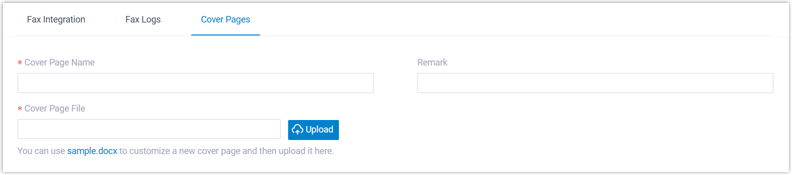

Add a Fax Cover Page
Fax Cover Page appears as the first page of an outbound fax, typically displaying essential fields such as sender information, recipient details, brief message, etc. This topic describes how administrator can configure a fax cover page from PBX web portal.
Introduction
Yeastar P-Series Software Edition provides a default fax cover page for quick and easy outbound faxing. This cover page is built-in and cannot be modified or deleted.
- As an administrator, you can configure system-wide fax cover pages from PBX web portal. These cover pages will be available to the extension users who are authorized to send outbound faxes.
- For extension users, as long as they are authorized to send outbound faxes, they can create extension-specific fax cover pages from their Linkus Desktop or Web Client.
The following instructions describe how administrator can configure a fax cover page from PBX web portal. For more information about how extension users can proceed from their Linkus clients, see xxx and xxx.
Limitations
Prerequisites
Prepare a cover page file that meets the following requirements:
- File format:
.pdf - File size: Less than 5MB
Procedure
- Access the creation page of fax cover page.
.png)
- Log in to PBX web portal, go to .
- Under the Cover Pages tab, click Add.
- Complete the following settings.

Setting Description Cover Page Name Enter a name to help you identify the cover page. Remark Enter a short description. Cover Page File Click Upload to upload a PDF file. - Click Save.
Result
- The fax cover page is created and displayed in the list.Tip: You can click
 to preview the cover page in a new browser tab.
to preview the cover page in a new browser tab..png)
- Extension users authorized to send outbound faxes can view and use the cover page directly from Linkus Desktop or Web Client.